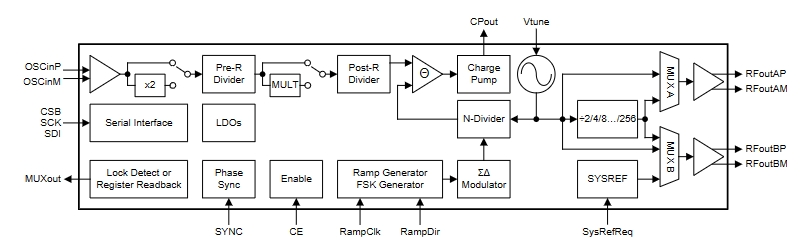
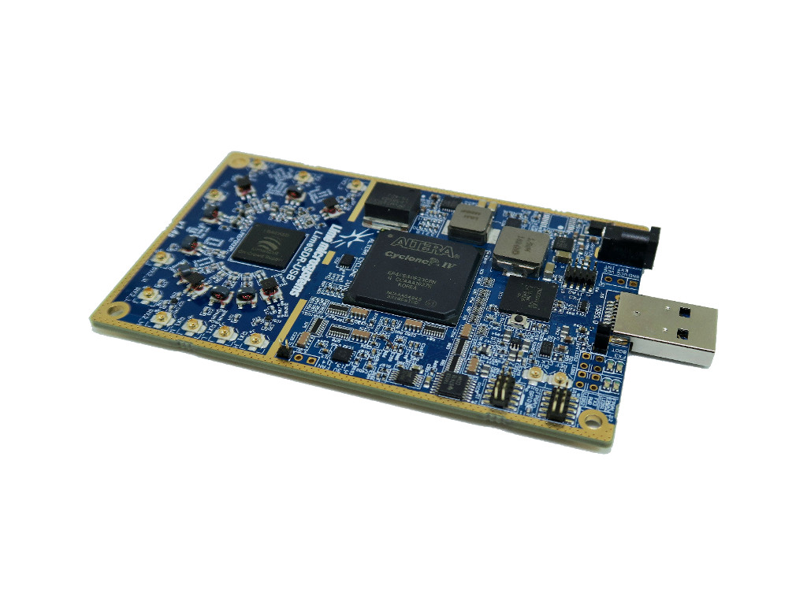

从事嵌入式软件开发4年有余，我自认为还是有相当多的知识和技能存在欠缺，所以近年来一直保持良好的学习态度，持续充实自身的技能。从之前的文章内容能够看出，我主要围绕嵌入式软件开发的多个方面记录自己的学习心得。但实际上不仅限于此，在过去的一年中有很多机会接触到射频开发，所以学习到了很多有意思的新知识，这对我来说算是一件很有乐趣的事情。这种乐趣来自于对未知的探索，因为我并非专业的科班出身，所以在这之前对射频开发领域是完全一片空白的，因此刚开始对我来说这是一个很大的挑战，但是我逐渐将它变为一种乐趣。以下内容来自与一位初学者的日记。
从射频信号开始
什么是射频信号？通俗来说就是特定频率的电磁波信号，但是这个描述太笼统了，因为大多数电子产品都会发射一些干扰信号，这些我并不认为这是射频信号，我理解的射频信号是具有一定信号强度且能够远距离传输的电磁信号。
射频信号的产生
射频信号需要依靠射频电路和天线来产生。通过时钟源、PLL、放大器就能组成简单的射频电路，接触过单片机的开发者应该都听说过PLL这个词，通过它能够得到我们想要的频率的信号，例如单片机内部的主时钟信号、射频信号等。可能有些人对单片机上的晶振有误解，认为单片机的时钟是由晶振提供的，这是不正确的，如果单片机内部具有PLL，那么时钟信号由PLL提供，晶振仅仅是一个时钟参考的作用，用于校正PLL输出的时钟频率。
PLL的工作原理
PLL的全称是Phase-Locked Loop，即相位锁定环路，下图是某PLL信号内部的模块框图，这里只关心最关键的PLL部分。信号的来源是那个正弦符号的那个模块（VCO），它直接输出我们想要的频率，而它输出频率的准确性就是依靠PLL的负反馈机制完成的，输出的信号经过N分频后与参考信号进行比较，当频率和相位不一致时，会调节VCO的电压来调节VCO输出的频率，这个调节是快速且准确的。这个负反馈环就是相位锁定环路，PLL一般先锁定频率，保证频率没有误差，再锁定相位，保证相位一致。CPout和VTune通过一个外部电路连接，一个滤波电路，形成一个更加稳定的PLL环路，这个外部电路叫做环路滤波器。

天线为什么能发射电磁波
我认为这里采用了和变压器类似的原理，我们的天线可以看成变压器的初级绕组，通过施加高频电流，使得天线周围产生交变电场和磁场，距离天线一定距离的电磁场信号能够向空间外自由传播，这就将射频信号发射到空中了。射频信号的接收原理类似，就是空中的电磁场信号耦合到了天线上，相当于变压器的次级绕组。
为什么电磁信号能够在空中自由的传播，我目前还不能够完全理解，大致就是变化的电磁和磁场能够相互感应产生，具体到理论上可能需要深入理解麦克斯韦方程。
调制
发射射频信号的意义很大程度上是为了在空中传递信息，因为低频的信号的天线不方便制作，因为天线需要1/4波长的长度，当直接发射一个低频信号时所需的天线就显得太庞大了。把需要传递的信号叠加到高频信号上就是一个和好的方法，射频信号承载信息的过程就是调制，调制的方法由很多，有调相、调频等，还可以组合多种不同的调制方法以充分利用信道带宽。什么是信道？传输信息的通道，这里特指射频通道。强调信道的意义是因为所有的空中射频信号都同时存在，而却别它们的就只有频率不同而已，信号因为调频等原因它占用的频率不是一个固定的点，而是一段频率，例如蓝牙的某个信道频率范围是2401~2403MHz，显然整个自由空间的信道是有限的，因为高频信号的产生和传输都是很难的。
通过混频器能够将低频信号和高频信号进行叠加合成出另一个射频信号，在这个射频信号中包含了我们先要传递的信号。而那个低频信号就是基带信号，高频信号就是有PLL产生的本振信号。
阻抗匹配
在一般的电路设计中都会考虑阻抗匹配，阻抗匹配是为了功率能够最大程度的传递出去，当阻抗不匹配，信号的功率就不能最大化的进行传递，导致信号质量不佳，更严重的是信号可能引起反射等问题。考虑一个简单的电压源，其内部电阻r，电压源外接一个电阻R构成一个简单的回路，为了使得电阻R的功率最大，显然当R=r时其能够获得的功率最大，这时输出阻抗r和输入阻抗R相等，这就是阻抗匹配。在射频电路中除了电阻外，还有电抗(复阻抗中的虚部)，它们共同组成了射频电路中的阻抗。我尝试理解射频电路中的阻抗匹配，发现这是一门非常复杂的学问，还要解决一些偏微分方程。总之保证阻抗匹配是射频电路设计的一大要点。
如果想要强行调整一个射频端口的阻抗怎么办呢，手动计算肯定是一个非常麻烦的过程，史密斯圆图是一个非常好的工具，它是用于确定射频传输阻抗的基本工具，通过它也能调整端口的阻抗，可以使用史密斯圆图软件进行阻抗的精确计算。史密斯圆图的用途非常广泛，矢量网络分析仪中表示端口的阻抗通常也是在史密斯图上表示。
一般的射频连接件都使用50欧姆的阻抗进行设计，在设计射频电路时，不同射频模块的连接部分就需要考虑两端的阻抗要一致，对于印刷电路板来说，上面的导线也是射频电路的一部分，所有电路的走线也需要进行阻抗匹配，需要综合考虑PCB布线的线宽、拐角等，此外PCB基板材料的层厚、材料等都是影响PCB走线阻抗的因素，一般的RF4材料的PCB介电常数不稳定，通常不作为高质量射频电路板考虑，进口的罗杰斯PCB是射频电路板中用的较多的。最近国产的特氟龙材料的PCB也能实现稳定优质的介电常数，使用它做了一块天线阵列，效果还比较好。
S参数
学习射频信号，肯定离不开S参数，S参数不仅仅是用于射频领域，它用于所有信号领域。它是描述信号完整性的一个工具，S参数的全程是Scatter参数，即散射参数，一般用于描述一个二端口网络的频域特性。使用S11描述一个端口的反射特性，通常可以用它描述一个天线的质量好坏，S11可以转换为SWR(驻波)表示，一般天线的驻波小于1.2就说明天线质量比较好。S21通常用于描述二端口器件的插入损耗，对于一般的滤波器，在通带内S21大于-0.5dB。
谐波
谐波是一个很有意思的东西，正经的射频信号是标准的正弦波，但是如果它经过分频或者一些其它处理，那么在信号中就会产生谐波成分，谐波就是原始基波信号频率整数倍的频率的信号。一个信号分频后通常是方波，使用傅里叶分解后，很明显能够看到多阶的谐波。此外，一个标准的正弦波信号经过一个非线性元件时，在其内部同样会产生谐波信号的成分，非线性元件就是伏安特性曲线不是一条直线，在其非线性区域带入正弦信号表达式，经过泰勒展开后可以得到原始正弦信号的多阶谐波信号成分，通常阶数越高其振幅越弱。
接收射频信号
射频信号经过在空气中传输后，其信号强度肯定会衰减的，其信号衰减的规律符合自由空间损耗模型，信号衰减值与传播距离的对数线性相关，与信号频率的对数线性相关。大部分待接收的信号强度都比较低，一般在-80dBm以下。为了解析如此低的信号，就需要放大器来放大这个信号，一般使用低噪声放大器，它通常用于放大接收端的微弱信号。将接收到的信号可以采用和发射端类似的方法进行混频来解析我们想要的信号，也就是下变频。下变频后的信号称为中频信号，中频的意思就是中间频率，因为它还不是最终想要的信号。中频信号一般还需要使用带通滤波器进行处理，因为这里需要一把下变频带来的镜频干扰，过滤难度一般和中频大小和滤波器的带宽有关。中频信号经过ADC采样后就得到了基带信号。
IQ调制
现在接收芯片都使用IQ正交调制，即基带信号使用一对正交的信号进行表述，I相就是原始信号下变频后的信号，Q相信号时原始信号经过90度的相位旋转后下变频后的信号，IQ调制能够解决镜频干扰等问题，在信号发射端还能实现扩频的效果。在复平面坐标下，使用I表示实部，Q表示虚部，每一对IQ就表示一个复平面下的一个点，将基带数据映射到复平面上就是IQ调制的过程。
调制方法
信号的调制方法有调频、调幅、调相这三种或者同时使用多种不同类型的调制方法。调幅就是载波频率保持不变，载波信号随着基带信号调整幅度。调频就是载波信号幅度不变，但其瞬时频率的偏移随基带信号做线性变化。调相就是载波信号的相位随基带信号线性变化。
具体来说，调整方法有AM、FM、PSK、QPSK、QAM、16QAM等。
星座图表示方法
对于具体的调整方法来说，都可以使用IQ调制实现，其调制符号在复平面上的图像就构成了一个星座图像，通过星座图像可以更加清晰理解信号解调的过程。
这是一个8PSK调制的星座图。
OFDM
OFDM是正交频分复用的简称，它是一种信号复用的方法，它是一种应用在具体调制方法上层的技术。它将传统的一个信道划分为多个信道，能够更加充分的使用信道带宽。更具体的来说它主要是为了解决再宽带信道中的频率选择性衰落问题而广泛运用的。我自己使用OFDM+QPSK实现了OFDM的收发代码，主要是使用傅里叶变换来实现的，OFDM中使用循环前缀来进行数据同步是一个比较好的设计。不过我在实现OFDM时遇到过一个问题一直没有解决，就是当传输信道中存在相位噪音时，QPSK星座图出现了旋转偏移，显然对于QPSK来说偏移超过90度时就会导致无法正确解调，应该有方法能够解决星座图旋转的问题，不过我目前还不会。
软件无线电(SDR)
一般人很难同时接触射频电路设计和信号调制解调算法的设计。为了简化软件开发人员的学习难度，使用软件无线电技术，可以使用软件的方法直接输出射频信号。这里需要使用相关的射频开发板，通过USB和主机连接，再主机上通过一定的算法生成IQ信号，将IQ信号传输到射频开发板上由射频板输出信号，这对软件开发人员来说是一个很友好的过程。同理信号的接收也可以使用SDR完成。我自己也使用软件无线电开发实际参与多个项目开发，感受到了软件无线电的强大。
我使用过两款SDR设备，LimeSDR和HackRF，都具有易用的SDR，使用体验也比较好。
